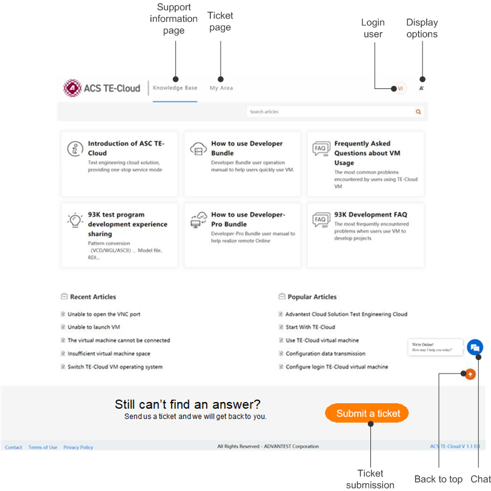

Help Center
The help center provides TE-Cloud documentation, online services, and ticket system for using the ACS TE-Cloud platform.

The help center consists of two pages: Knowledge Base and My Area. For the specific content displayed on these two pages, refer to Knowledge Base and My Area. The elements on both these two pages are introduced as follows:
- Support information page
- The Knowledge Base page is a collection of the technical and support information for TE-Cloud. See Knowledge Base for more information.
- Ticket page
- The My Area page displays the tickets you submitted. See My Area for more information.
- Login user
- The abbreviation of the user name with which you are logged in. Clicking the user name displays the full user name and e-mail address. Clicking the User profile button in that panel displays the user profile and activities. Clicking LogOut ends your session.
- Display options
- Clicking this icon opens a panel with page display options:
- Font: Click + or - to adjust the font size.
- Wide screen: Switch on this option to show the page in wide-screen mode.
- Back to top
- Clicking this button returns to the top of the page.
- Ticket submission
- Click this button to
send
us feedback for TE-Cloud.
See Submitting a ticket for details.
- Chat
- Clicking this icon displays a chat box that lets you talk with the TE-Cloud support team.
You can enter questions or feedback in this box and press Enter to send the message.
If our technical support team can respond to your message immediately (within two minutes), their reply appears in the box, and you can continue the conversation until you close the help center. This conversation is submitted as a ticket, with your first message as the ticket name. Close this ticket if your issue has been resolved.
If no immediate reply is possible, your question is submitted as a ticket. At the same time, an e-mail is sent to your mailbox with the ticket information. You can track the ticket status in My Area.
Functional changes
- Introduced in SmarTest 7.6.2